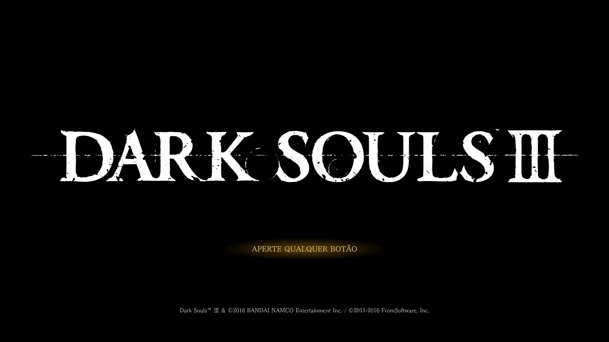
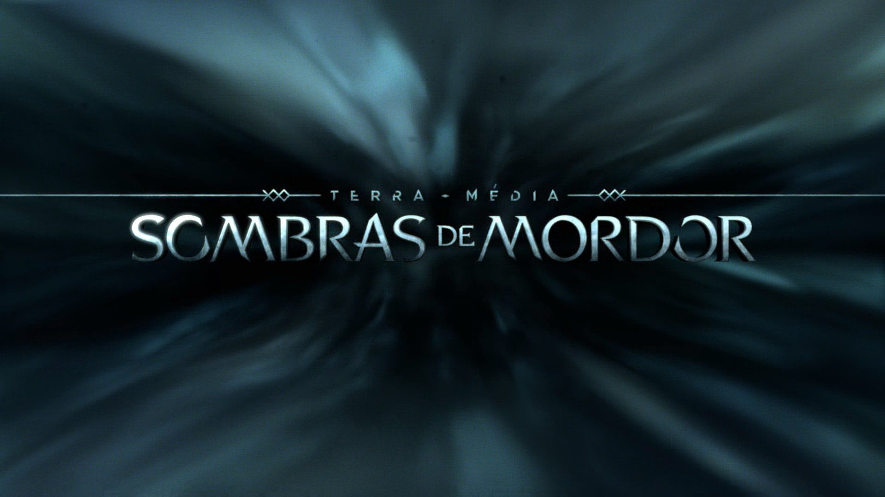

Final Fantasy XV, developed by Square Enix, is one of the best games that I ever played, it contains a great story line, a lot of sidequests, and various items to inprove your character stats, just like a normal RPG. It's map is huge and very fun to explore, it contains a lot of strong enemies and dungeons, it also includes an amazing sound track created by Yoko Shimomura, one of the songs is called Somnus Orchestra, and it is my favorite one.
Side content is a major part of Final Fantasy 15. The first half of the game is structured like many other open-world RPGs of the past 10 years: You have a main quest you can pursue, but you're also given dozens upon dozens of side quests that send you to all corners of the map. These tasks vary widely in how interesting they are — many objectives are as simple as "go here and find this item/kill these enemies." But the world of Lucis is so interesting, so detailed and begging to be explored, that I welcomed more excuses to travel to its farthest reaches. I spent tens of hours ignoring the main story for these bonus activities, simply to spend more time getting to know this world's nooks and crannies.
Some of the side quests extend beyond the less interesting goals, too. Lucis has a whole bunch of completely optional dungeons, dangerous places that are fleshed out, full of unique enemies and giant setpieces despite never being featured in the main story. These alone are reason enough to stick with grinding through the side content, as well as compelling arguments for returning to the game after you've completed the main story, whereupon even more challenging postgame content opens up.
Dark Souls III

Dark Souls 3, developed by FromSoftware and Hidetaka Miyazaki, is a very challenging game, it contains a lot of different enemies and bosses to defeat, various items to inprove your character stats, just like a RPG. Unfortunatly Darksouls lacks some story telling, and most of the story has to be figured out by the player, the game has a great level design with a lot of hidden passages and short cuts to be unlocked, unfortunately there is nothing to guide the player through the journey, exept for the bonfires that have to be found.
Side content is not an inportant part in Dark Souls 3. The first half of the game is structured through the beggining cut scene and the rest is through dialogs and connections, the problem with side contents is that you have to acquire certain equipments to be able to start it, an the reward is not worth the time, sometimes you get some help to defeat a boss or you are able to purchase that character armor, but other than that it is not worth the trouble to do it.
However when it comes to defeating a boos, the sense of triumph after defeating a Dark Souls boss is unlike anything else I have felt in video games. The desire to smash a controller into pieces after dying for the 15th time in a row, along with a great battle sound track, is erased by the euphoria of winning on the 16th. I scream, shout, and pound the floor like a child while playing Souls, and Dark Souls 3 does not lose this.
Middle-earth - Shadow of Mordor

Shadow of Mordor, developed by Monolith Productions, is set in a fully open world, and features various role-playing game elements such as experience-points and skills. As the player progresses in the game, Talion will grow stronger, yet so will his enemies.
There are various ways the player can complete their main objective. For instance, if the player has to kill a high ranking Uruk, he can choose to first focus on his lower ranking footmen, either killing them or turning them into sleeper agents using the domination ability. These agents will then attempt to eliminate their former leader, which may not always be successful. Aside from the main story line, there are various side quests and random events the player can complete within Mordor, this game does not feature a lot of soundtrack but its sound effects are great,title screen music for those who want to listen to it.
An original feature of Middle-earth: Shadow of Mordor is the Nemesis system. Every enemy players face is a unique individual, differentiated by their personality, strengths and weaknesses. These enemies are shaped by their encounters with the player to create personal arch-enemies who are unique to every game play session. Players must out think each distinctively different enemy they encounter to infiltrate the ranks and dominate within the dynamic world that remembers and adapts to their actions and choices.